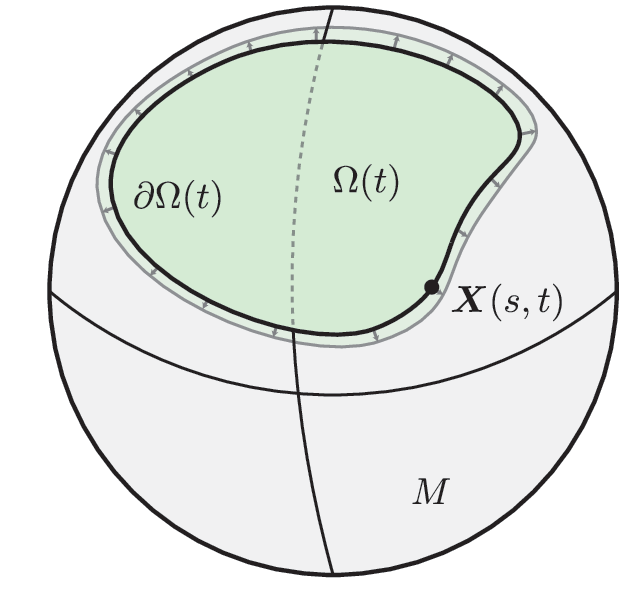
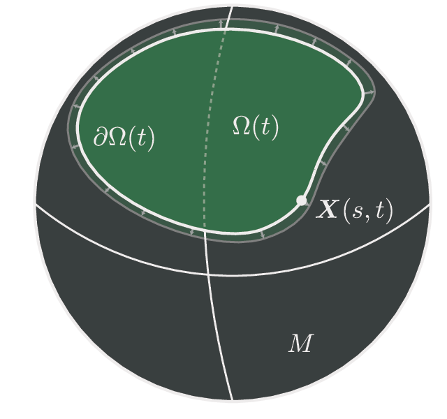

Geometric regulation of stress-limited growth on surfaces
arXiv:2611.14159 · Code on GitHub
This repository contains the MATLAB code and data behind a study of microbial communities growing on curved and rough surfaces, where each cell's growth slows under the pressure built up by the growth of the whole colony.
Biofilms rarely grow on flat ground. Teeth carry ridges and lobes, and water-repellent leaves such as the lotus are patterned from the nanometre to the micron scale. The model here is one of the simplest free-boundary descriptions of a growing colony: the cells move like a fluid through a frictional medium, and they grow at a rate that decreases with the local growth-induced pressure. Asymptotic and numerical solutions on the sphere, and homogenization over periodic surfaces, show how surface geometry can slow growth or speed it up.
Main results
- Sensing slows growth, globally. For any positive growth law that decreases with pressure, the total growth rate of the colony decreases with the sensitivity $\lambda$, even though the pressure itself decreases pointwise. For large $\lambda$, growth concentrates at the edge and $|\dot\Omega| \approx (2\Gamma/\lambda)^{1/2}\,|\partial\Omega|$.
- Curvature slows growth. On a sphere, a colony of a given area grows more slowly the smaller the sphere. The flat plane is the fastest sphere. On a small sphere the growth rate peaks when the colony edge reaches the equator.
- Anisotropic roughness speeds growth. On a periodically corrugated surface the colony behaves as if on a flat surface with an effective mobility tensor $\mathbf{K}^*$. One-dimensional ridges relieve stress and push the growth rate towards the stress-free limit. A symmetric egg-crate pattern leaves it unchanged.
- No optimal surface exists. Among surfaces of fixed colony area, the growth rate can be made arbitrarily close to zero (sharp cones) or to the stress-free rate (thin strips), but neither bound is attained.
The model sets out the equations. Growth on the sphere, Periodic surfaces and Optimal surfaces summarize the analysis with the figures from the paper. Code covers installation and how to regenerate every figure.
The model¶
Equations of motion¶
The colony occupies a connected domain $\Omega(t)$ on a smooth surface $M$ (Fig. 1). It is treated as an inviscid fluid with stress $-p\mathbf{I}$ on a frictional substrate, where $p$ is the growth pressure. The cell velocity $\mathbf{u}$, tangent to $M$, satisfies a Darcy-type law with friction coefficient $\zeta$ and a volumetric growth constraint:
Here $\nabla_M$ and $\nabla_M\cdot$ are the surface gradient and divergence. The edge moves with the cells,
The colony is stress-sensing when the growth rate $\gamma$ depends on $p$. Eliminating the velocity leaves a nonlinear Poisson problem for the pressure, with the Laplace–Beltrami operator $\Delta_M$:
Sensing slows growth¶
Write $\gamma(p) = \widehat\gamma(\lambda p)$ with $\widehat\gamma$ smooth, positive and non-increasing, and $\lambda \ge 0$ a sensitivity. A maximum-principle argument shows that if $\lambda_1 > \lambda_2$ then $\lambda_1 p_1 \ge \lambda_2 p_2$ and $p_1 \le p_2$. So a more sensitive colony has a lower pressure everywhere, yet grows more slowly overall. Bounding $p$ from both sides gives $\|p\|_\infty = O(\lambda^a)$ with $-1 \le a \le 0$.
For large $\lambda$, growth is confined to a boundary layer at the edge. A one-dimensional balance across that layer gives the edge velocity and the total growth rate:
Growth therefore scales with the perimeter of the colony, not its area. For a circular colony this gives the linear growth of the radius at late times that is seen in experiments. The rest of the work uses $\gamma(p) = \tau^{-1}e^{-\lambda p}$.
Dimensionless form¶
Lengths are scaled by the colony size $L$, time by the growth time $\tau$, and pressure by $\zeta L^2/\tau$. The equations become
and the only parameter apart from the geometry is the dimensionless sensitivity $\lambda$. For a colony of size 1 mm, cell growth time 1 hr and edge speed 10 µm/min, $\lambda$ is of order 1 to 10. In local coordinates $\boldsymbol{\xi}$ with metric $\mathbf{G}$ and area element $J = \sqrt{\det\mathbf{G}}$, the Laplace–Beltrami operator is $\Delta_M v = J^{-1}\nabla_{\boldsymbol{\xi}}\cdot(J\mathbf{G}^{-1}\nabla_{\boldsymbol{\xi}}v)$.
Growth on the sphere¶
On a sphere of radius $R$, an axisymmetric colony is a polar cap $0 \le \eta < H(t)$ of area $2\pi R^2(1-\cos H)$. The pressure solves a two-point boundary value problem and the cap angle moves with the edge velocity:
Rescaling $\tilde p = p/R^2$ maps this to the unit sphere with an effective sensitivity $\tilde\lambda = R^2\lambda$. Without sensing ($\lambda = 0$) the area grows exponentially and $H(t) = 2\sin^{-1}\!\big(\sin(H_0/2)\,e^{t/2}\big)$, whatever the value of $R$. With sensing, the effective sensitivity grows like $R^2$.
Large spheres and the plane¶
Let $R \to \infty$ at fixed area, so that $H \to 0$ with $RH \to \tilde H = (|\Omega|/\pi)^{1/2}$. The equations become those of a disk of radius $\tilde H$ in the plane, which have a closed-form solution:
For $\lambda\tilde H^2 \gg 1$ the radius grows linearly, $\tilde H(t) \sim (2/\lambda)^{1/2}\,t$, in line with the boundary-layer estimate.
Linear stability¶
Perturb the edge of the disk with wavenumber $m \ge 1$ and relative amplitude $\varepsilon(t)$, so that $r = \tilde H(1 + \varepsilon\cos m\xi)$. Liouville's representation of solutions to $-\Delta p = e^{-\lambda p}$ gives the perturbed pressure in closed form, and the kinematic condition gives $\mathrm{d}\varepsilon/\mathrm{d}t = \sigma\varepsilon$ with
Since $c > 0$, every mode decays: the circular colony is linearly stable for every $\lambda \ge 0$. Because $\tilde H$ also changes in time, the amplitude decays monotonically but not exactly exponentially. The scripts planarStability.m and planarStabilitySymbolic.m check this formula numerically and symbolically.
Finite spheres¶
On finite spheres the pressure is solved by Chebyshev collocation in $\eta$ ($N = 100$) with Newton's method, using chebfun. The cap is advanced with fourth-order Runge–Kutta ($\Delta t = 0.1$).
All radii grow at a similar rate at first. Later, colonies on larger spheres grow faster, and the plane is the fastest case: it reaches $100|\Omega_0|$ about 25% sooner than the sphere with $R = 10$. For a fixed area, a colony on a larger sphere has a longer perimeter. Each unit of edge then needs to move less to add the same area, so the interior pressure is lower and sensing slows growth less.
Without sensing, the growth rate increases monotonically with $H$. With sensing, it peaks near the equator, where the perimeter is longest, and the curve becomes increasingly symmetric about $\pi/2$ as $\lambda$ grows. This follows from growth scaling with the perimeter when $\lambda$ is large.
Growth on periodic surfaces¶
Next consider a surface that is flat on average but corrugated on a small scale $\varepsilon$, given as the graph $z = h_\varepsilon(\xi,\eta) = \varepsilon\,h(\xi/\varepsilon, \eta/\varepsilon)$ with $h$ periodic on the unit cell. For the lotus leaf, features are about 10 µm against a colony of about 1 mm, so $\varepsilon \sim 10^{-2}$. The metric is $\mathbf{G}_\varepsilon = \mathbf{I} + \nabla h_\varepsilon\otimes\nabla h_\varepsilon$ and $J_\varepsilon = (1 + |\nabla h_\varepsilon|^2)^{1/2}$. The pressure solves
Homogenization¶
A two-scale expansion in the fast variable $\boldsymbol{\xi}' = \boldsymbol{\xi}/\varepsilon$ gives, as $\varepsilon \to 0$, a growth problem on a flat domain with an effective mobility tensor $\mathbf{K}^*$:
Here $\langle\cdot\rangle$ is the average over the unit cell $\mathbb{T}^2$, and $w_j$ solves the periodic cell problem $-\nabla_{\boldsymbol{\xi}'}\cdot(J\mathbf{G}^{-1}\nabla_{\boldsymbol{\xi}'}w_j) = [\nabla_{\boldsymbol{\xi}'}\cdot J\mathbf{G}^{-1}]\cdot\mathbf{e}_j$. True and reference areas are related by $|\Omega_\varepsilon| \to J^*|\Omega^*|$, with $J^* = \langle J\rangle$.
The roughness tensor¶
$\mathbf{K}^*$ plays the role of a permeability: growth is favoured along its eigenvector with the larger eigenvalue. Because the eigenvalues of $\mathbf{G}$ are $1$ and $J^2$, the eigenvalues of $\mathbf{K}^*$ are bounded:
Equality holds only when $\mathbf{K}^* = \mathbf{I}$. The lower bound can be made as small as desired by scaling up $h$.
Anisotropy accelerates growth¶
Two surfaces are compared, both with amplitude $a$: a one-dimensional wave $h = a\sin(2\pi\xi')$ and an egg-crate $h = a\sin(2\pi\xi')\sin(2\pi\eta')$. The cell problem is solved by Fourier collocation on a $31\times31$ grid. The homogenized problem on a disk of true area $\pi$ is solved by Chebyshev–Fourier collocation in polar coordinates.
The egg-crate gives an isotropic $\mathbf{K}^*$ and exactly the flat growth rate. The one-dimensional wave gives $K_{11} < K_{22}$, and its growth rate rises with $a$ towards the stress-free value of 1. Rescaling the axes by $\sqrt{K_{11}}$ and $\sqrt{K_{22}}$ explains this. For these surfaces $J^*\sqrt{K_{11}K_{22}} = 1$, so the problem is equivalent to growth on an ellipse of area $\pi$ and aspect ratio $\sqrt{K_{11}/K_{22}}$. As $a\to\infty$ that ellipse becomes an infinitely thin line, and the pressure inside it vanishes.
The moving-boundary problem is solved with surfacefun, a fast spectral-element solver for surface PDEs, using order-12 elements, elliptic grid generation and remeshing at every step, with RK4 and $\Delta t = 0.05$.
Asymptotically optimal surfaces¶
Since geometry can either slow or speed growth, it is natural to ask which surface minimizes or maximizes $|\dot\Omega|/|\Omega|$ at fixed area. The answer is that neither extreme is attained. Both bounds are approached by surfaces whose perimeter goes to zero or to infinity, which follows from growth scaling with the perimeter.
| Surface | Perimeter | Growth rate | |
|---|---|---|---|
| Infimum | Sharp cone, opening $\varepsilon \to 0$: $\mathbf{x}_\varepsilon = (\varepsilon\eta\cos\xi,\ \varepsilon\eta\sin\xi,\ \alpha(\varepsilon)\eta)$ | $2\pi\varepsilon \to 0$ | $|\dot\Omega_\varepsilon|/|\Omega_\varepsilon| = 8c(\lambda/\varepsilon^2) = O(\varepsilon) \to 0$ |
| Supremum | Thin strip $|\xi| < \pi/(4\varepsilon)$, $|\eta| < \varepsilon$ in the plane | $\sim \pi/(2\varepsilon) \to \infty$ | $\|p_\varepsilon\|_\infty \le \varepsilon^2$, so $|\dot\Omega_\varepsilon|/|\Omega_\varepsilon| \to 1$ |
So $\inf |\dot\Omega|/|\Omega| = 0$ and $\sup |\dot\Omega|/|\Omega| = 1$. Neither can be reached by a domain of nonzero area, because $e^{-\lambda p} > 0$ and $p \not\equiv 0$. Both examples are instantaneous. The cone stays near-optimal as the colony grows up it, but the strip thickens as it grows. Whether a surface can hold a growing colony near either bound is left open.
Code¶
Installation¶
The code is MATLAB (tested with R2022a) and depends on two packages, which must be on the MATLAB path:
- chebfun: see its site for installation.
- surfacefun, a fork of danfortunato/surfacefun: clone it and add it to the path.
git clone https://github.com/scottweady/surface-growth.gitRunning setup.m from the repository root adds this repository's src/ and utils/ folders to the path.
Quick start¶
setup % add src/ and utils/ to the path
cd data, makedata, cd .. % solve and save figure data (skips existing .mat files)
cd figs, makefigs, cd .. % write figs/output/fig2.pdf ... fig6.pdf
cd test, runtests, cd .. % convergence studies, written to test/output/The figure data in data/ is committed, so makefigs runs without re-solving anything. To force a re-solve, delete the corresponding .mat file and run makedata again.
A single solve looks like this. The example computes the instantaneous growth rate of a colony covering a hemisphere of radius 10, and the homogenized growth rate over a one-dimensional wave:
setup
lambda = 1;
% Spherical cap: edge velocity, pressure and velocity on the polar grid
[U, p, eta, u] = growthSphere(pi/2, lambda, 10, 100);
% Roughness tensor of h = a sin(2 pi x), then the homogenized growth rate
a = 0.5;
[K, J] = roughnessTensor(@(x, y) a*sin(2*pi*x));
dAdt = growthHomogenized(lambda, K, J);
dAdt / pi % growth rate per unit area; 1 is stress-freeSolvers¶
The core solvers in src/ each solve the pressure problem $-\nabla\cdot(\mathbf{K}\nabla p) = e^{-\lambda p}$ by Newton's method, on a different geometry:
| Function | Solves | Discretization |
|---|---|---|
[U, p] = growth(Omega, lambda, K) | Growth flow on a general surfacemesh, optionally anisotropic ($\mathbf{K}$ defaults to $\mathbf{I}$). Returns the Cartesian velocity $\mathbf{U} = -\mathbf{K}\nabla p$. | Spectral elements (surfacefun) |
[dOmegadt, u, v, p, x, y] = growthHomogenized(lambda, K, J, Nr, Ntheta) | Homogenized problem on a disk of radius $1/\sqrt{J}$. Returns the area growth rate and the fields. | Chebyshev–Fourier in polar coordinates (32×31 default) |
[U, p, h, u] = growthSphere(H, lambda, R, N) | Axisymmetric growth on a spherical cap of angle $H$ and radius $R$. Returns the edge velocity and fields. | 1D Chebyshev collocation |
[K, J] = roughnessTensor(h, N) | Cell problem for a periodic graph $z = h(x,y)$ on $[0,1]^2$. Returns $\mathbf{K}^*$ and $J^*$. | Fourier collocation ($N = 31$ default) |
utils/ holds shared helpers: an RK4 stepper, figure styling, colormaps and a progress bar.
Reproducing the figures¶
The scripts in scripts/ run the simulations. data/makedata.m runs them and saves their output, and each figs/scripts/figN.m plots it.
| Figure | Script | Data | Content |
|---|---|---|---|
| 2 | sphereProfiles.m | fig2.mat | Pressure and velocity on caps $H = \pi/2$ for several $R$. Interactive on this page, from docs/makeinteractive.m |
| 3 | sphereGrowth.m | fig3.mat | Growth trajectories on spheres, plus the planar limit. Interactive on this page, from docs/makeinteractive.m |
| 4 | sphereGrowthRate.m | fig4.mat | Growth rate against $H$, and $H^*(\lambda)$. Interactive on this page, from docs/makeinteractive.m |
| 5 | roughnessGrowthRate.m | fig5.mat | Homogenized growth rate against amplitude, with flow fields. Interactive on this page, from docs/makeinteractive.m |
| 6 | movingBoundaryRoughness.m (calls growthEvolve.m) | fig6/isotropic.mat, fig6/anisotropic.mat | Moving-boundary growth on isotropic and anisotropic surfaces. Interactive on this page, from docs/makeinteractive.m |
| — | planarStability.m, planarStabilitySymbolic.m | — | Dispersion relation $\sigma_m$, checked against the 2D solver and derived symbolically |
figs/scripts/hero.m makes the sphere image in the README. On this page, Figures 2–6 are interactive and drawn in the browser from data generated by docs/makeinteractive.m (docs/assets/sphere-profiles.js, sphere-growth.js, sphere-radii.js, sphere-rate.js, roughness.js, moving-boundary.js), using the same solvers and committed data as the paper's figures. docs/makeschematic.py renders the light and dark versions of the Fig. 1 schematic by recolouring the exported PDF; it needs Ghostscript.
Convergence tests¶
test/runtests.m runs the convergence studies and writes their output to test/output/:
sphereConvergence.m: the spherical-cap solver in $N$ and $\Delta t$.roughnessConvergence.m: the roughness tensor in the cell-problem resolution.homogenizationConvergence.m: the homogenized disk solver in $(N_r, N_\theta)$.growthConvergence.m: the moving-boundary simulation.
Citing¶
If you use this code, please cite the paper:
S. Weady, Geometric regulation of stress-limited growth on surfaces, arXiv:2611.14159 (2026). arxiv.org/abs/2611.14159
@article{weady2026geometric,
title = {Geometric regulation of stress-limited growth on surfaces},
author = {Weady, Scott},
journal = {arXiv preprint arXiv:2611.14159},
year = {2026},
doi = {10.48550/arXiv.2611.14159}
}The growth model and the planar solution come from:
S. Weady, B. Palmer, A. Lamson, T. Kim, R. Farhadifar and M. J. Shelley, Mechanics and morphology of proliferating cell collectives with self-inhibiting growth, Physical Review Letters 133, 158402 (2024).
The surface solver is described in D. Fortunato, A high-order fast direct solver for surface PDEs, SIAM J. Sci. Comput. 46(4), A2582–A2606 (2024).